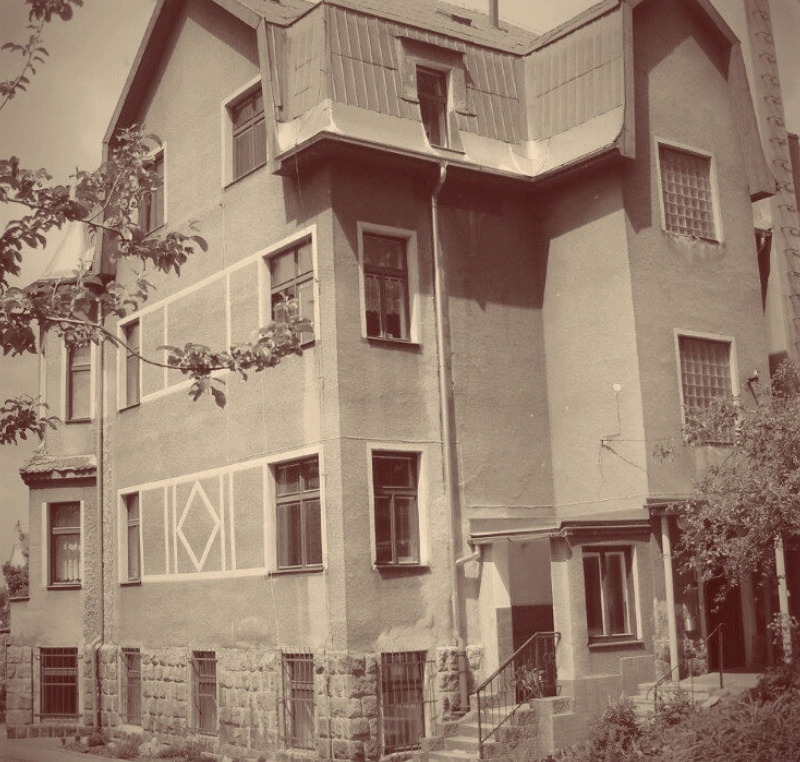

Naše historie

Motto: “Všechny děti jsou naše“
„Dne 30. června 1966 se v Liberci sešli rodiče duševně defektních
dětí a zástupci institucí, aby zřídili denní a týdenní pobyt pro
tyto děti. Do té doby byly děti buď doma bez pomoci nebo v
přeplněných ústavech. Po rozhodnutí o zřízení zařízení došlo k
výběru budovy a jmenování ředitele. Ústav byl slavnostně otevřen
15. září 1969.
Do roku 2002 fungoval pod Okresním úřadem, poté přešel pod Liberecký kraj. Rozšířil spolupráci s dalšími institucemi a zlepšil služby. V roce 2005 se k němu připojil Domov pro osoby se zdravotním postižením a v roce 2007 získal právní subjektivitu jako APOSS Liberec."
Do roku 2002 fungoval pod Okresním úřadem, poté přešel pod Liberecký kraj. Rozšířil spolupráci s dalšími institucemi a zlepšil služby. V roce 2005 se k němu připojil Domov pro osoby se zdravotním postižením a v roce 2007 získal právní subjektivitu jako APOSS Liberec."
.png)
Naše sociální služby jsou finančně podporovány z rozpočtu
Libereckého kraje
Libereckého kraje

Podpořeno z fondu solidarity EU - náprava
povodňových škod
povodňových škod

Transformace DOZP je podpořena z projektu
č. CZ.1.04/3.1.03/87.00022
č. CZ.1.04/3.1.03/87.00022
Made with ♥ by Hakkku